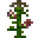

野生作物世界各地都能找到小團的野生作物。
用手就可以收穫野生作物，當然刀或其他鋒利的工具也行。它們會掉落種子和一些農產品。再次種植這些種子就可以種出人工栽培版本的作物。
多方塊結構
作為示例，這是小麥的野生版本。
Every crop that can be cultivated can also be found in the wild. Wild crops will look similar to their cultivated counterparts, but are more hidden within the grass. Wild crops are only mature from June to October. Otherwise, they appear dead until the next Summer.
多方塊結構
所有野生作物的變種
Wild crops will spawn in climates near where the crop itself can be cultivated, so if looking for a specific crop, look in the climate where the crop can be cultivated. However, unlike Crops that the player has planted, wild crops do not require Hydration. Instead, they are found in areas depending on the average Temperature and Rainfall.
The next pages show a table of the environments where wild crops can be found.
Crop | Temperature | Rainfall (mm) |
|---|---|---|
Cassava | $(cfg:temperature:10.4) - $(cfg:temperature:40) | 260 - 500 |
Green Bean | $(cfg:temperature:-4) - $(cfg:temperature:19.4) | 150 - 410 |
Lentil | $(cfg:temperature:-7.6) - $(cfg:temperature:19.4) | 75 - 190 |
Peanut | $(cfg:temperature:12.2) - $(cfg:temperature:40) | 130 - 360 |
大豆 | $(cfg:temperature:-9.4) - $(cfg:temperature:15.8) | 160 - 410 |
大麥 | $(cfg:temperature:-9.4) - $(cfg:temperature:17.6) | 70 - 310 |
燕麥 | $(cfg:temperature:-9.4) - $(cfg:temperature:15.8) | 140 - 400 |
黑麥 | $(cfg:temperature:-9.4) - $(cfg:temperature:8.6) | 100 - 350 |
玉米 | $(cfg:temperature:-9.4) - $(cfg:temperature:23.0) | 300 - 500 |
小麥 | $(cfg:temperature:-9.4) - $(cfg:temperature:15.8) | 100 - 400 |
水稻 | $(cfg:temperature:8.6) - $(cfg:temperature:40) | 200 - 500 |
甜菜 | $(cfg:temperature:-13) - $(cfg:temperature:23.0) | 70 - 300 |
Crop | Temperature | Rainfall (mm) |
|---|---|---|
捲心菜 | $(cfg:temperature:-13) - $(cfg:temperature:23.0) | 60 - 280 |
胡蘿蔔 | $(cfg:temperature:-13) - $(cfg:temperature:23.0) | 100 - 400 |
大蒜 | $(cfg:temperature:-5.8) - $(cfg:temperature:15.8) | 60 - 310 |
Onion | $(cfg:temperature:-7.6) - $(cfg:temperature:21.2) | 100 - 390 |
Potato | $(cfg:temperature:-9.4) - $(cfg:temperature:15.8) | 200 - 420 |
西葫蘆 | $(cfg:temperature:-9.4) - $(cfg:temperature:19.4) | 90 - 390 |
Tomato | $(cfg:temperature:1.4) - $(cfg:temperature:40) | 120 - 390 |
Red Bell Pepper | $(cfg:temperature:12.2) - $(cfg:temperature:40) | 190 - 450 |
Yellow Bell Pepper | $(cfg:temperature:12.2) - $(cfg:temperature:40) | 190 - 450 |
Pumpkin | $(cfg:temperature:-9.4) - $(cfg:temperature:23.0) | 120 - 390 |
Melon | $(cfg:temperature:5) - $(cfg:temperature:40) | 200 - 500 |
Canola | $(cfg:temperature:-13) - $(cfg:temperature:3.2) | 120 - 320 |
Crop | Temperature | Rainfall (mm) |
|---|---|---|
Radish | $(cfg:temperature:-11.2) - $(cfg:temperature:6.8) | 190 - 410 |
Alfalfa | $(cfg:temperature:-14.8) - $(cfg:temperature:5) | 240 - 480 |
黃麻 | $(cfg:temperature:1.4) - $(cfg:temperature:19.4) | 100 - 410 |
Papyrus | $(cfg:temperature:12.2) - $(cfg:temperature:40) | 310 - 500 |
甘蔗 | $(cfg:temperature:17.6) - $(cfg:temperature:40) | 160 - 500 |